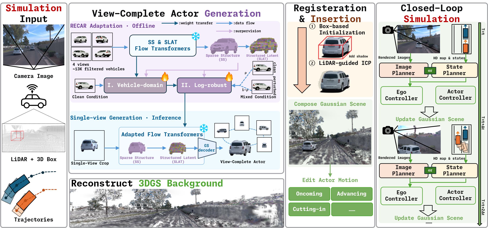
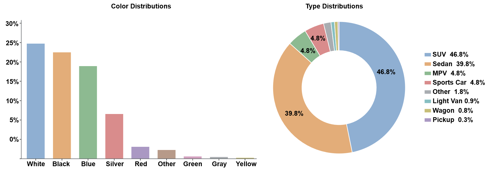
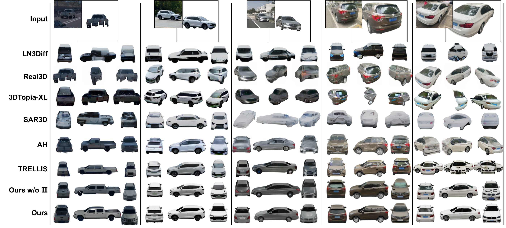

RECAST: From Log Replay to
Closed-Loop Driving Simulation
with View-Complete Actors
Anonymous Authors
The framework
From observation to interaction.
RECAST combines vehicle generation, scene registration, and planner-in-the-loop rendering.


Enlarge figure ↗01 · Observe
Use a segmented vehicle image from a driving log.
02 · Generate
Adapt the image-to-3D prior in two stages.
03 · Register
Align and insert the actor into the reconstructed scene.
04 · Simulate
Render, plan, update, and repeat.
The dataset
RECAR Dataset
Background-free, multi-view imagery connects an image-to-3D prior with the diversity of real vehicles.
~20Kreal vehicles
~600KRGBA images
30views per vehicle on average
1200 × 800image resolution
Vehicle color and type distributions


Enlarge figure ↗Compare RECAR with existing vehicle datasets
| Dataset | Vehicles | Type | Views | Resolution | BG-free | Regular |
|---|---|---|---|---|---|---|
| SRN-Car | 2.1K | Synthetic | 250 | 128 × 128 | Yes | Yes |
| Objaverse-XL-Car | 11.4K | Synthetic | — | — | Yes | Yes |
| MVMC | 576 | Real | 10 | 600 × 450 | No | No |
| 3DRealCar | 2.5K | Real | 200 | 1920 × 1440 | No | No |
| MAD-CARS | 70K | Real | 85 | 1920 × 1080 | No | No |
| RECAR | 20K | Real | 30 | 1200 × 800 | Yes | Yes |
Views: average number of views or video frames per vehicle. BG-free: background-free images are provided or can be rendered from supplied assets. Regular: viewpoints follow a predefined sampling pattern. —: not applicable.
Closed-loop evaluation
Closed-loop planner evaluation.
Planner-in-the-loop demonstrations with GTRS-Dense under controlled ego–actor interactions beyond log replay.
Scene 002 · Stationary-facing
Scene-level evaluation
Scene-level rendering comparison.
Compare native actors, Asset Harvester, TRELLIS, and RECAST as actor motion exposes previously unseen views.
Scene 002 · Oncoming · StreetGS
| Metric | Street Gaussians | RECAST |
|---|---|---|
| FDincep ↓ | 129.35 | 112.10 |
| CLIPmargin × 1000 ↑ | 0.14 | 3.47 |
Actor-level evaluation
One observation. A view-complete actor.
Compare generated vehicles across input observations and viewpoints, then inspect the complete held-out RECAR results.


Enlarge figure ↗Compare actor-level results on RECAR
| Method | PSNR ↑ | SSIM ↑ | LPIPS ↓ | CLIPimg × 100 ↑ | FDincep ↓ | FDdinov2 ↓ |
|---|---|---|---|---|---|---|
| Real3D | 13.19 | 0.5691 | 0.3223 | 68.17 | 91.196 | 1282.01 |
| LN3Diff | 18.95 | 0.8843 | 0.1105 | 63.03 | 93.288 | 1455.05 |
| 3DTopia-XL | 15.54 | 0.8085 | 0.1817 | 59.90 | 166.294 | 1299.59 |
| SAR3D | 15.39 | 0.8231 | 0.1588 | 66.55 | 64.042 | 746.99 |
| AH | 19.22 | 0.8792 | 0.1044 | 78.29 | 38.368 | 183.08 |
| TRELLIS | 21.02 | 0.9077 | 0.0603 | 78.22 | 9.788 | 43.89 |
| Ours w/o II | 22.90 | 0.9178 | 0.0534 | 78.30 | 8.176 | 36.94 |
| RECAST (Ours) | 22.90 | 0.9179 | 0.0532 | 78.38 | 7.992 | 36.47 |
AH: Asset Harvester. Ours w/o II uses vehicle-domain adaptation only, without driving-log-robust adaptation. All values are reported in the paper.
The paper
Abstract
Closed-loop driving simulation requires rendered observations to remain reliable as the ego vehicle and surrounding actors move beyond their recorded trajectories, exposing views absent from the source log. Existing data-driven simulators reconstruct dynamic actors from sparse observations, which can result in rendering artifacts under these viewpoint changes. We introduce RECAST (REconstructing Controllable Actors for Simulation and Testing), a 3D Gaussian Splatting framework that generates a view-complete actor from a single segmented vehicle observation in a driving log and registers the generated actor in the reconstructed scene. RECAST supports planner-in-the-loop rendering under controlled ego–actor motion. To adapt an image-to-3D prior to real vehicles, we further introduce RECAR, a dataset of approximately 20K real vehicles with 600K background-free RGBA images spanning diverse vehicle colors and types. We use two-stage adaptation to improve vehicle generation from real driving-log observations. At the actor level, RECAST reduces FDincep from 9.788 to 7.992 relative to unadapted TRELLIS. At the scene level, under actor motion beyond logged trajectories, RECAST reduces FDincep from 129.35 to 112.10 and increases CLIPmargin (×1000) from 0.14 to 3.47 relative to Street Gaussians. We demonstrate planner-in-the-loop simulation with the image-conditioned planner GTRS-Dense. Compared with native Street Gaussians actors, RECAST increases the no-collision (NC) rate from 22.2% (12/54) to 63.0% (34/54) and the mean minimum predicted time-to-collision (TTC) from 0.798 s to 2.150 s. These experiments show that RECAST supports closed-loop planner evaluation under controlled ego–actor interactions beyond log replay.